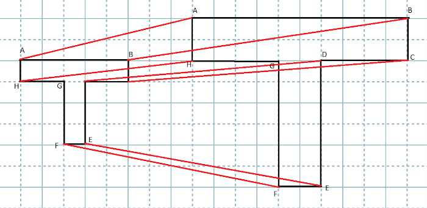
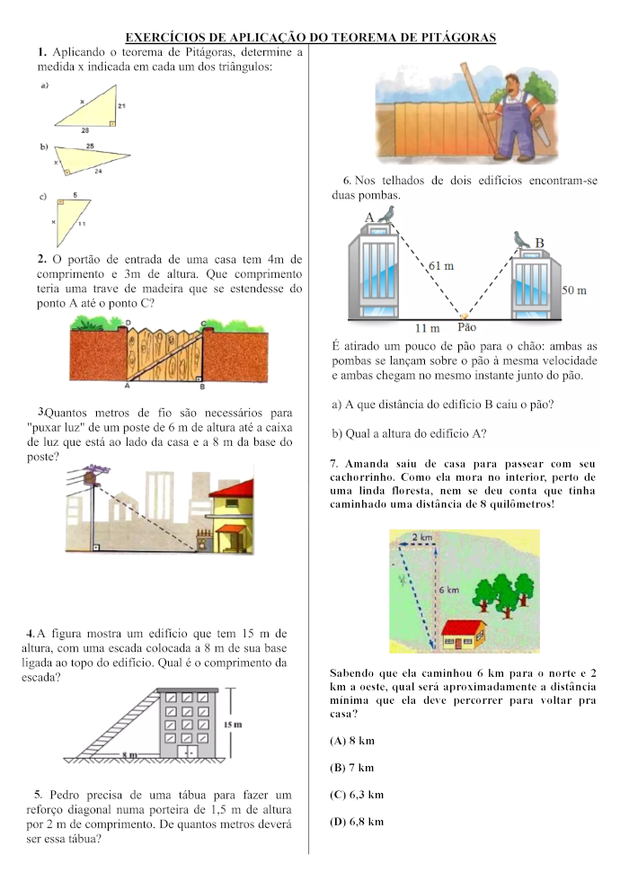
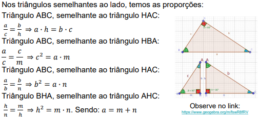
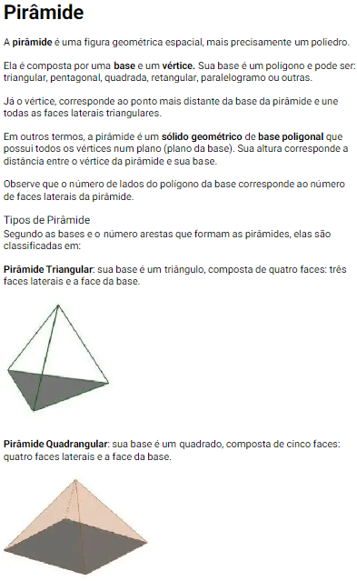
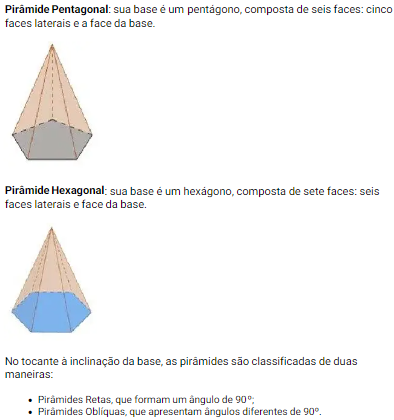
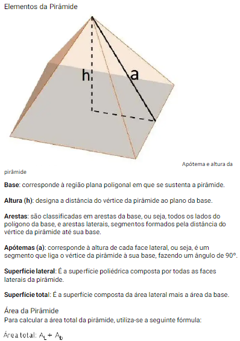
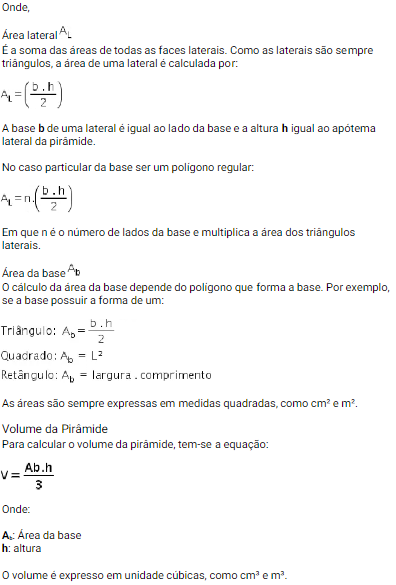

Matemática
26/04/2024
Aula 2 - Ampliando e reduzindo figuras
Semelhança
Na aula passada, vimos que para encontrar a razão de semelhança entre
duas figuras, é necessário dividir as medidas dos lados correspondentes,
ou seja, k = a′/a = b′/b = ⋯, onde a, a′, b e
b′ representam as medidas dos lados das figuras.
Quando há proporcionalidade entre as medidas dos lados correspondentes e
congruência entre os ângulos, dizemos que os polígonos são semelhantes.
Ampliação e redução – homotetia
Para reconhecer a proporcionalidade entre as medidas dos lados e
identificar que os ângulos correspondentes têm a mesma medida vamos
olhar a figura inicial observando apenas um dos lados.

Note que os lados AB, A’B’ e
A’’B’’ estão em paralelas cortadas por
transversais e o mesmo pode ser observado para os outros lados. Mas, o
que isto significa?
02/05/2024
Amplicação de imagens

Aumentar a imagem em uma proporção 2:1
09/05/2024
Poder público indiferente e incapaz e o grande culpado pelas enchente no
RS
www.gazetadopovo.com.br/poder-publico-indiferente-incapaz-culpado-pelas-enchentes-rs/
Autor: J.R. Guzzo
1. Quais razões você pode apresentar para classifica o texto como um
artigo de opinião?
Quando o autor expressa o ponto de vista com suas experiências
2. Qual exemplo o autor do texto usou para evidenciar ao leitor que as
enchentes no Brasil podem ser prevenidas?
Ele usou a geografia e os governos que passaram que não fizeram nada
para que não ocorresse a prevenção dessa catástrofe.
3. Para você, por que o autor do texto escolheu a expressão "carne e
osso" para descrever o cidadão gaúcho?
Para demonstrar oa situação que o povo gaúcho está passando.
4. Segundo o texto, quem são os verdadeiros responsáveis pelas enchentes
no Brasil?
Todos que estavam no governo, dês da época do presidente
Getúlio
Vargas
10/05/2024
Aula 6 - Estudo do triângulo retângulo
Triângulo retângulo: relações métricas
16/05/2024
Esse papel foi entregue na sala ⬇️

h2 = co2+ ca2 | co2 = h2+ ca2
17/05/2024
Relações métricas

24/05/2024
Esse papel foi entregue na sala ⬇️



